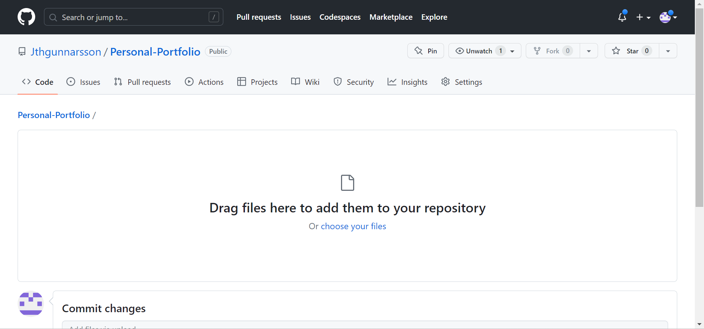

Project 1 - The Website
Preperations
I started by watching the first tutorial videos. To make the project a little bit easier I did exactly as the video instructed because I had never used HTML5 or made a website before.
I chose to use Brackets because that is the program that the teacher used.
Next I downloaded the template Editorial for the website on HTML5 UP and started setting up my website. I chose the Editorial template because it has a sidebar I can customize and I like the style.
Github
I started by signing up in GitHub and setting up a new Repository under the name Personal-Portolio. To upload the files from my computer to GitHub I simply dragged and dropped the files into the repository.


After that, I went into "Settings" in the Github Repository and clicked the "Pages" tab. There I changed the Source from "none" to "main" and saved it. With that, my page is online. :))

Changing the Website
I started with making copies of generic.html file and changed the name to Vel608G-Project1.html for this project and then Vel608G-Project2.html etc. for later projects. Then I changed the sidebar so it would have a subbar for this course and other courses in attending and personal projects. After that, I added a picture to Project 1.
Then I changed the homepage and added an introduction.
CV
I made a copy of Vel608G-Project1.html and saved it under the name CV.html. From there I started writing the first part of my CV: introduction to me.
Then I filled my CV traditionally and no problems came up after that. Here is my CV.
My Github Repository
Here is the Repository.